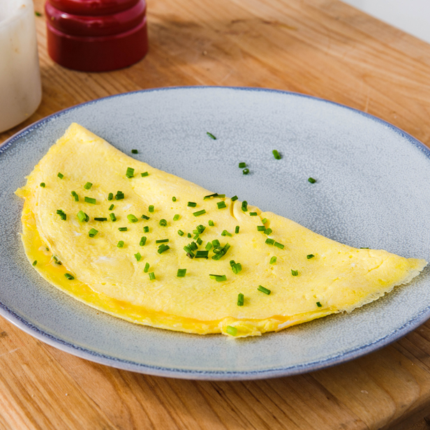

Omelette

Servings
Ingredients
- 3 eggs
- 1 tsp of salt
- 1 tsp butter
- 1/2 tsp chives
Feel free to add any ingredients of your choosing, such as more vegetables
- Crack warm eggs into a bowl
- Add salt and blend with a fork
- Heat a nonstick pan over medium-high heat
- Add in butter
- Pour eggns into the center of the pan
- Help shape the omeletter with a spatula as is becomes more solid
- Loosen the omelette and lift up the far edge
- Fold over omelette